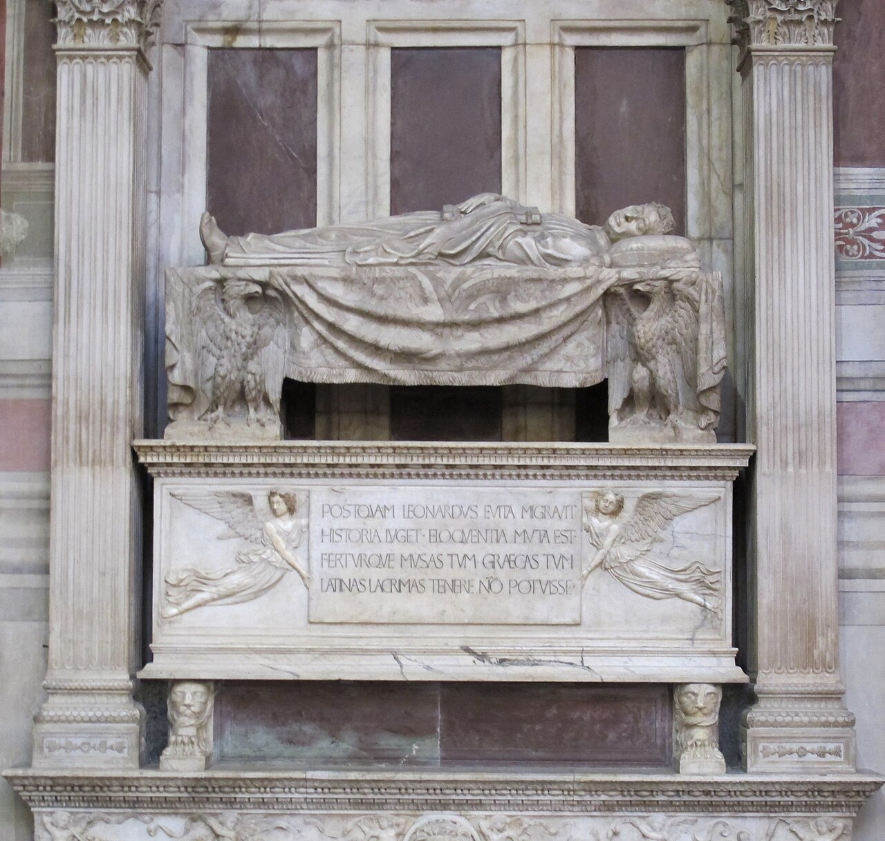

The human being at the centre of the image
Apprendre à voir, oser regarder.
Six ways of looking at the individual in Renaissance painting and sculpture.
Finding a place beside the sacred

The patron remains small beside sacred figures.
See artist profile →
Donors now share the scale of sacred figures.
See artist profile →
Florentine citizens enter a religious narrative.
Existing through one’s face

Profiles recall ancient medals and assert status.
See artist profile →
Painted terracotta brings an individual face to life.

Sculpture captures identity in three dimensions.
Entering history

A rider honoured in paint as though in sculpture.
See artist profile →.jpg)
A military leader claims imperial-scale commemoration.
See artist profile →
Horse and rider seem to command the public square.
Becoming illustrious

A commander depicted like a heroic statue.

Roman heroes become models of civic virtue.

A biblical heroine embodies resistance to tyranny.
See artist profile →Defying oblivion

A humanist honoured for his knowledge and public life.
Examine the reclining figure


A scholar’s memory becomes a monument.

Idealised portraiture meets the passage of time.
Saints and heroes

A saint poised to act.
See artist profile →
A graceful, youthful victor rather than a muscular warrior.
See artist profile →
A hero focused before action, full of restrained strength.